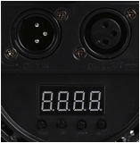

An optional feature of the Tanda Player – help control the atmosphere through lighting. If you would like to have a few coloured lights around the venue which cycle through many colours (or stay on fixed colours) whilst the tandas play and then fade up to either white or a colour of your choice when the cortinas play, you can do this via the uDMX interface to a standard DMX light.
Simple DMX lighting can use a standard DMX cable to connect them and the Tanda Player can interface to this with a USB to DMX cable driver which are reasonably cheap. DMX controllable lights can be quite cheap but can also be very effective especially when you have a few of them. You can even get lights that include motors so that the patterns change and these can be very effective if set up so that the lights slowly move and change colours during the tandas but also freeze and go white or bright during a Cortina.
DMX controllable lights are typically connected using a cable that runs from one light into the next and the next and so on. Each ‘daisy chain’ of lights on a single cable is known as a “Universe”. The Tanda Player can operatae ONE DMX Universe. Note that some lights support Wifi connections and some manufacturers supply wireless adaptors which plug into the light like a regular cable but the wire is then replaced by the Wifi interface meaning you do not need to have long wires running down the side of the hall!
Each light has a control panel on it that allows it to be configured to use a given address. Each light can be given its own or a shared address – a number between 1 and 512. A controller (The Tanda Player in this case) sends information down the wire about what colours and other functions to use at each of the used addresses. I.e. the controller can send different instructions to each light and make them show different colours or behave in different ways – or if all lights share address, make the lights respond together.

The above is an example of a cheap party light.
The above picture shows the back of a light showing the DMX IN and OUT sockets allowing the daisy-chain of lights (The OUT of one light is connected to the IN of the next light). The lower part (Just visible black-on-black!) shows the display and control buttons, which is where the user sets the address that the light will listen on.
The Tanda has a dedicated lighting setup app.
You can use this to define one or more groups. Each group is given a base address that should match the light’s address. Multiple lights can have the same address but the group of lights must share the same channels!
For Red/Green/Blue lights each light has its own channel. Enter these in the R,G and B fields (1,2 and 3 in the example above)
If your light has motors or other effects they too will have a channel and a value. These can be set by entering a list of them in the format “<channel>:<value>”with a space character between them in the “Other” fields.
For example: “1:255 7:0”would set channel 1 to 255 and channel 7 to 0.
Normal mode is when the lights are following your defined colour sequence. Cortina mode is when the cortina is playing and lights are typically made brighter or static.
Each group will be driven to go through all the colours of a defined sequence taken a given period of time before the sequence starts again. (Note that the left and right hand colours match!)
When a new group is added the colour bar will be black meaning lights are off. This is not a valid state and so if you do not need a group any more make sure you remove them rather than setting them to black.
Move the slider for the duration to set a time after which the pattern can repeat. The sequence will follow from left to right.
The bar will then be shown with markers indicating approximately one second spacing.
Click on the bar and a colour picker will appear. Choose the colour and close the window. The bar will go this colour. Then click on another part of the bar and choose another colour. Repeat until the colours are as you want. To remove a colour click on the slightly bolder line indicating where the colour was set and it will be removed.
NOTE – If you have lights that fail to respond smoothly to the DMX signals produced, it may be the frame rate is too high for them. There is a frameRate control at the top of the lighting page which defaults to 20 frames per second but can be set slower if necessary. If however you lights can respond quickly and you have some flickering noticeable on some transitions you can experiment with increasing the frame rate.
Colours fit onto a circle quite naturally.
There are many ways to think of a colour and Tanda Player offers two for mixing purposes.
HSL – Hue / Saturation / Luminosity – defines a colour (Hue) as an angle around the circle starting with 0 degrees for red and then 120 degrees for Blue and 240 for green and back to 360 degrees which is back at the start and so is 0 degrees too and is red. The saturation is a measure of how far from the centre of the circle the colour is – so white is not saturated and red on the edge of the circle is fully saturated. The luminosity can take any colour set with Hue and Saturation and send it towards black to darken it.
RGB – Red / Green / Blue – defines a colour as the composite quantities of red green and blue required. All colours of light are made from these three. No red green or blue makes black. Full amounts of red green and blue make white.
To move from one colour to another you can imagine that you either move directly in a straight line drawn on the circle above between the two colours or you could go around the circle either clockwise or anti-clockwise from one colour to the other. The former equates to RGB mixing and the latter equates to HSL mixing.
RGB mixing goes in a straight line between two colours
In the above the red sector is passed through but quite near to the centre of the circle making less impact.
HSL mixing goes around the circle passing through all colours and using similar saturation and luminosity (by staying roughly the same distance out from the centre) as it moves.
As shown above, with HSL mixing the strong pink becomes a strong red on the way to the yellow. The system works out whether it is shorter to go clockwise or anti-clockwise to get to a colour. So careful positioning can make two very different results!
In the following the bar is set to red and the blue colour roughly
180 degrees around the circle:- directly opposite.
Using RGB mixing (the default) the colour goes through the middle making a muddy brown/grey colour
But HSL mixing has a huge difference:
If you clicked the blue say at around 179 degrees (half a circle = 180) the mix goes through the pink sector and then the dark blue.
If you clicked the blue at say 181 degrees then the colours go via the yellow and then green sectors.
The Tanda Player creates a list of all colours in each of the groups you setup so that it can move from the left to the right of the given colour bar. For each second of time, the system generates roughly 100 instructions for each light that it sends out through the USB socket to the lights so that the dancers do not see a flicker as the lights change very slightly from one colour to another.
The more groups you have, the more instructions it has to send each second!
Therefore there is a limit to how many groups you can have setup before this processing becomes too much for the Tanda Player to cope with and then potentially the music may start to stutter or you may notice poor response to the web pages. However it has been tested with 5 groups without any issues.
A slave device is just another Raspberry Pi (The same computer as the one inside the Tanda Player) configured to talk to the Tanda Player and can have the USB DMX cable plugged into it instead. This takes all the load off the Tanda Player itself and so more lights could be configured.
Note the slave devices also provide additional HDMI outputs that can be used to drive display boards, TVs or projectors!
To help mark cortinas and help dancers with making connections using Cabaceo the system can change the lighting during a Cortina.
Each group can have a colour to go to when a Cortina starts.
Clicking on the colour button brings up the colour picker. Simply choose a colour and close the window. RGB mixing is used to go to the Cortina colour.
Before going to the Cortina colour the system can be set to dip the lights first by using the above controls. The first number defines the time taken to reach the dipped colour, the second number is the time to stay dipped before then going to the groups Cortina colour. The fade time is the last number. All times are in seconds.
When the Cortina finishes, after the “Fade delay” number of seconds, the lights return to their own sequence colours using RGB mixing and taking the Cortina (OUT) fade time.